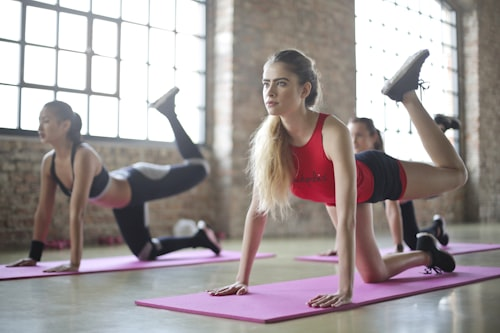
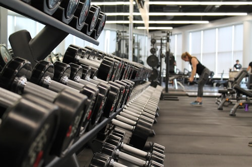
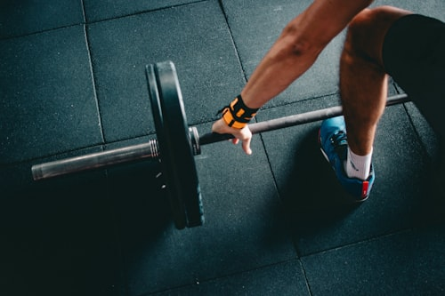

Calentamiento
5 minutos de trote suave en el mismo lugar, seguidos de movilidad articular en hombros, cadera y rodillas.
Tenemos rutinas diseñadas para cada nivel de condición física. Elige la que mejor se ajuste a ti y empieza a entrenar hoy mismo. Todas incluyen calentamiento, ejercicios principales y enfriamiento.

5 minutos de trote suave en el mismo lugar, seguidos de movilidad articular en hombros, cadera y rodillas.
3 series de 12 sentadillas, 3 series de 10 flexiones de rodillas y 3 series de 20 segundos de plancha abdominal.
5 minutos de estiramientos suaves enfocados en piernas y espalda baja para relajar los músculos trabajados.

4 series de 15 zancadas por pierna, 4 series de 12 flexiones completas y 4 series de 15 remo con banda elástica.
4 rondas de 1 minuto de burpees seguidos de 1 minuto de descanso activo caminando en el lugar.

5 rondas de HIIT: 40 segundos de esfuerzo máximo en sentadilla salto, escaladores y burpees, con 20 segundos de descanso entre ejercicio.
5 series de 20 saltos al cajón, 5 series de 15 dominadas asistidas y 5 series de sprints de 30 segundos.